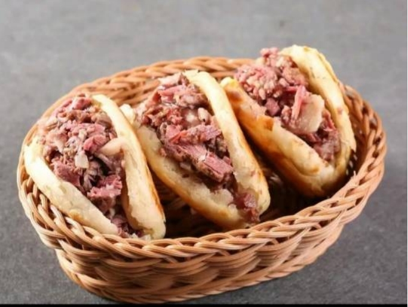

河北驴肉火烧
驴肉火烧是华北地区极为流行的传统小吃，起源于河北省保定市、沧州市河间市、廊坊市大城县一带，广泛流传于冀中平原，卤好的驴肉伴着老汤汁夹入酥脆的火烧里面。驴肉火烧经过了不断地发展和推广，最终闻名大江南北。在华北地区的大街小巷随处可见驴肉火烧的店铺，完全融入了当地居民的生活之中。河间驴肉火烧和保定驴肉火烧最直观的区别在于保定的驴肉火烧是圆的，而河间的驴肉火烧是长方形的。据史书记载，驴肉火烧源于明建文二年(公元1400年)。
驴肉先以大火后以温火炖，配以近20种调料，烹煮时间长，熟度透彻，色泽鲜嫩，肉香而不柴，香味绵长，酥软适口。医书载驴肉补血、补气、补虚。可见驴肉不仅味道鲜美，还有保健功能。近代医学研究，驴肉是低脂肪、高蛋白食品，且钙、磷、铁含量也较高。驴肉火烧在北京、天津和河北等华北地区餐饮市场享有盛名。
历史起源
保定驴肉火烧的发祥地为保定市徐水区漕河镇。漕河系河北省保定市徐水区境内河流名称，漕河镇以漕河命名。漕河驴肉火烧历史悠久。相传，宋代时漕河码头有漕帮和盐帮两个帮会。漕帮以运粮为业，盐帮以运盐为业。双方为称霸码头，时常大动干戈，最终以漕帮大胜收局。漕帮俘获盐帮驮货的毛驴无法处理，便宰杀炖煮，设庆功宴；再将肉夹在当地打制的火烧内吃。漕河驴肉兴起，名吃由此诞生。
明朝开国皇帝朱元璋死后，其后代同室操戈。朱元璋的四儿子燕王朱棣发兵与朱元璋立的继承人——明惠帝朱允炆开战。朱允炆派大将李景隆与朱棣鏖战在白沟河一带，李景隆兵败退到徐水漕河镇。军中粮食匮乏，李景隆无奈命军士杀军马充饥。当地百姓有吃驴肉的习俗，所以烹饪的马肉也尤为香。自此烹马为食也成徐水漕河镇的习俗，制做出的马肉味道益美。清代，康熙重农桑，禁屠戮牛马，漕河一带士人便改以食马肉习俗，仅以驴肉食用；又加驴比马价格贱，人们专养驴食用。再有当地烙制的火烧外焦里嫩，刚出炉的火烧夹上烹制的小驴肉，成为遐迩闻名的当地名吃。
清乾隆帝下江南水旱两路必经河间，一次错过住处在农家吃饭，农家为了让皇帝吃着方便，把精心煮制的驴肉夹到层次松软的火烧里，乾隆吃后连连称赞美味可口。问农家此为何物，农家如实回答：大火烧夹驴肉，乾隆甚喜，即兴赋诗一首： 河间处处毛驴旺， 巧妇擀面似纸张。 做出火烧加驴肉， 一阵风来一阵香。
并差人在河间修筑行宫常住，河间乾隆行宫及手书御碑均有史料记载，以饱食驴肉火烧美味，后回到皇宫还时常想念驴肉火烧，遣和绅来河间寻找做驴肉火烧的那户农家进宫，和绅也是一位美食家，民间还流传着一段和绅吃驴肉火烧的故事，时值中秋和绅与几位夫人在府内吃驴肉火烧赏月，当时皓月当空，和绅见鲜香酥脆的驴肉火烧里面层次极多，一层层比纸张还薄，吃到嘴里松软异常。拿起夫人的玉手把玩时不禁诗兴大发： 玉人指甲长， 火烧分外香。 两相皆上品， 对月透华光。
此诗表述的意思是清朝女人们每日修剪的指甲非常长非常薄，薄到能够透过指甲看到微弱光线的月亮，火烧的层就和女人的指甲薄厚一样。
营养价值
驴肉的营养极为丰富，每100克驴肉含蛋白质27克，其蛋白质含量比牛肉猪肉都高，而脂肪的含量很低，是典型的高蛋白、低脂肪食品。驴肉还含有碳水化合物、钙、磷、铁及人体所需的多种氨基酸。驴肉中特有的氮浸出物，这些物质不仅能增进食欲，而且能增加肉的香味和味道。据本草纲目记载，驴肉性温，具有补气养血、益精壮阳、滋阴补肾、利肺作用，尤其是对止烦、安神清脑有独到效果，用驴骨熬汤可“治多年消渴（即糖尿病）。功效非凡的阿胶制品，就是用驴皮熬制而成的，具有很好的补血补气功效，对女性养颜护肤更有特效。驴鞭更是《本草纲目》、《四川中药志》、《吉林中草药》等药典公认的补肾保健上品。具有滋阴补肾、生精提神的作用，其功效仅次于鹿鞭，被誉为“男人餐桌上的伟哥”中青年朋友最喜爱此菜。驴脸、驴皮、阿胶具有补血益气，护肤养颜的功效，最适合于女士美容养颜。成就美女的三件宝：木瓜丰胸、木耳减肥、驴肉养颜。数驴肉功效最佳。心、肝、腰、肉、肚、肠、耳、尾、口条、蹄筋、骨髓均口味清香、脆而柔嫩，可健脾胃、补肝肾、固精填髓、补血益气，护肤养颜。
食谱相克
孕妇、脾胃虚寒、慢性肠炎、腹泻者不宜食用驴肉。驴肉中多有掺杂马肉甚至是猪肉冒充，而且一些驴肉呈现粉红色，是添加亚硝酸盐所致，食用后易诱发致癌，另外吃白马肉容易犯老病，所以一定要选择有保障的店去吃。